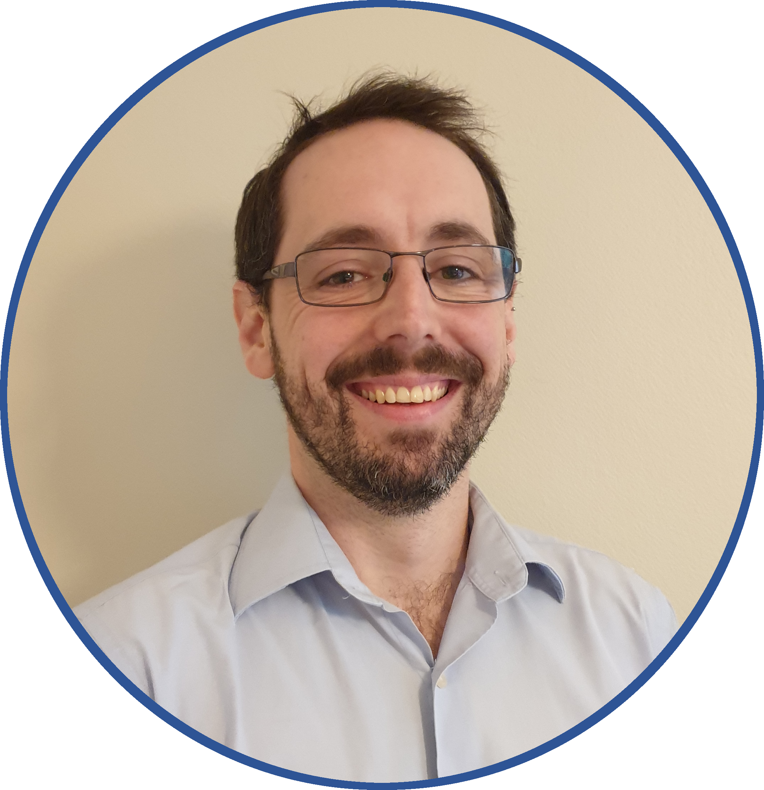

S3913624@student.rmit.edu.au
|  |
Nicholas (Nick) Charles ParkerStudent No.:S3913624 Github Repository:https://github.com/S3913624/COSC2196Assignment1.git Github Website Address: |
I am a 32-year-old, full-time employee at a leading manufacturer of industrial instrumentation focusing on metrology, which directly services the Australian mining, oil and gas sector. I am responsible for technical sales and training, and I have a passion for new and interesting technology. My other (sometimes obsessive) passions include listening to and playing music, video games, and playing touch football, which I commit to several times a week across Sydney.
Although born and raised in Sydney, I have had the opportunity to travel extensively and live in several countries including Malaysia and Singapore. Regrettably, I was never able to pick up any other languages but despite this downfall, my exposure to other cultures and customs has enabled me to curate successful relationships with international clients and suppliers regardless. I hope to develop a strong relationship with my fellow students and teachers as well.
I completed the Higher School Certificate in 2006, and had not attempted any form of higher education until now. It is through study with RMIT I hope to strengthen my skills in a fast paced, exciting and thriving industry, and gain credibility and confidence in my abilities.